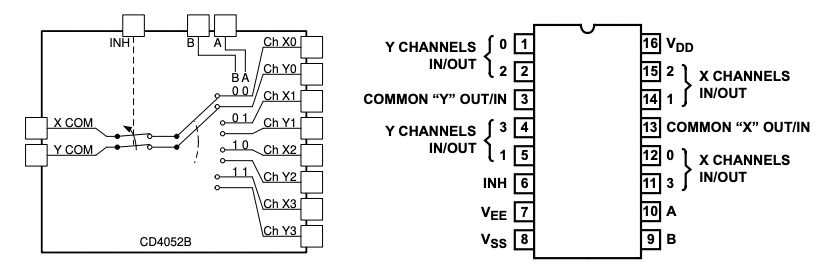
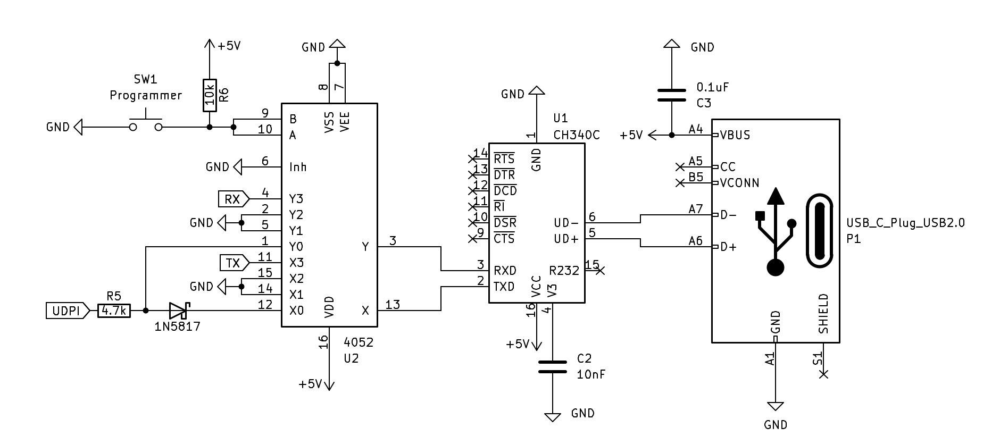

CH340
Este es un simple CI que permite la comunicación USB 2.0 a Serial & UPDI de muy bajo coste, diseñado y fabricado en china por Jiangsu Heng Qin Ltd. (WCH). Para usar el CI conectado a un ordenador/computadora, necesitas tener instalado el driver. De momento nos vamos a centrar en el CH340C/B que tiene unas prestaciones muy versátiles, entre ellas destacan las siguientes:
- Las versiones CH340C/N/K/E/X/B tiene reloj integrado, no requiere cristal externo. CH340B también integra una EEPROM utilizada para configurar el número de serie, etc.
- USB 2.0 a Serial, compatible con RS232, RS485, RS422.
- Usa el protocolo UART para comunicarse con el MCU.
- Soporta 5v y 3.3v.
Note
En este repositorio podrás tener acceso a un diseño de PCB que puedes construir tu mismo cómo cualquier material adicional que pueda ser de interés.
También podemos configurar el UART para Unified Program and Debug Interface (UPDI) que es habitual para programar los Microcontroladores (MCU) como el AVR Dx.

En la imagen mostramos el circuito básico y la conexión con un ATMega328P.
Puedes conseguir el CH340 en la tienda oficial del fabricante en AliExpress o en un distribuidor autorizado en china LCSC.
Esquema mínimo
Con este circuito integrado (CI) podemos comunicarnos al microcontrolador usando el protocolo Serial o para algunos programarlos mediante UPDI.
Serial
La comunicación Serial es la más elemental para comunicarnos con el MCU y el PC, en realidad estamos hablando un conversor de interfaz USB a UART.
Componentes
Use los siguientes componentes para construir el circuito mínimo:
- Un IC CH340.
- Condensador de 10nF.
- Condensador de 100nF / 0.1uF, Código: 104, Cantidad: 2.

UPDI
UPDI significa Unified Program and Debug Interface, Está diseñada para facilitar enormemente la programación de chips AVR modernos, entre otros. Básicamente cualquier chip (FT232/CP2102N/CH340/etc) que permita comunicación USB a Serial es compatible usando una resistencia y un diodo schottky conectados en los puertos TX y RX cómo se aprecia en el siguiente diagrama. Lo cual es una opción muy versátil y económica.
Componentes
- Un IC CH340.
- Condensador de 10nF.
- Condensador de 100nF / 0.1uF, Código: 104, Cantidad: 2.
- Resistencia de 470 ohm.
- Diodo schottky 1N5817 (puede ser otro; BAT43).

Serial + UPDI
Esta idea la obtuve de MCS Electronics, ellos no usan ``avrdude` y en el ejemplo usan un CI 4053. Al entender cómo funciona su solución hice los cambios más lógicos a mi parecer usando un 4052 y un pulsador.
Es posible usar el mismo CI para tener las dos funciones, pero se necesita un CI adicional que haga de switch (4052) para ir alternando a UART o UPDI y que será controlado por un pulsador, al ser presionado se activa el modo “programmer” como lo llamo yo, cuando no está presionado esta en el modo “data” o serial para que nos podamos entender. En el ejemplo de MCS Electronics usan el pin DTR (Data Terminal Ready) para controlar estos modos del 4052, a pesar de que conceptualmente funciona, pero en la práctica no del todo debido a que los clientes cómo CoolTerm, picocom entre otros usan el DTR y termina no funcionando bien.

El CI 4052 permitirá usar un pin de control XX para redirigir la entrada TX y RX del CH340, al circuito de UPDI o a los pines del UART del MCU.

Driver
Dependiendo del sistema operativo (OS) que use, deberá instalar uno de los siguientes controladores.